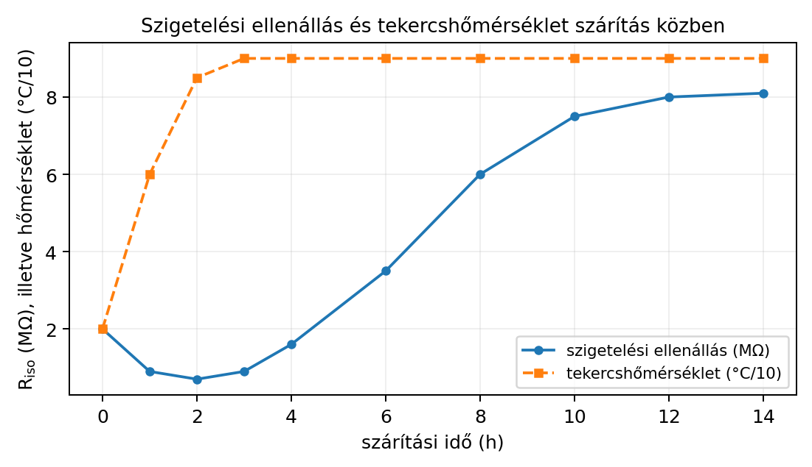

A villamos gép kívülről gyakran csak egy csendes vagy éppen zúgó doboz, belül azonban precíz anyagrendszer dolgozik: tekercselt réz vagy alumínium vezetők, szigetelőanyagok, vaslemezek, csapágyak és – egyes gépeknél – szénkefék. Ha a motort megbontod, nem elég „látni”, hogy van benne valami réz és vas: tudnod kell, milyen egy egészséges tekercsfej, mire való az impregnálás, miért szikrázik a szénkefe, és miből hallod meg a csapágyhibát. Ez az alfejezet ezt a gépszerkezeti és anyagvizsgálati tudást adja.
A(z) Vaslemezek, tekercsvezetők és szigetelési osztályok alfejezetben megismerkedtél a vaslemezekkel, tekercsvezetőkkel és szigetelési osztályokkal. Most arra a kérdésre válaszolunk, ami a műhelyben felmerül: mi van az állórész hornyaiban, hogyan készül és miért van impregnálva a tekercselés, mi a kalickás forgórész, mit vizsgáljunk a csapágyon és a szénkefén?
Képzelj el egy háromfázisú aszinkron motort, amelyet éppen megbontottak. Az állórész belső palástján hornyok futnak. A hornyokban szigetelt tekercsoldalak fekszenek, a horonyon kívül a kétoldali tekercsfej domborodik, amelyet üvegszálas kötözőzsineggel és impregnáló lakkal rögzítettek. A forgórész tengelyére préselt vaslemezcsomagban kalickás rudak húzódnak, a tengely két végét gördülőcsapágyak tartják. Ha csúszógyűrűs gépről van szó, a forgórész végén gyűrűkön futó szénkeféket is látsz.
A tekercselés javításának jellemző lépéseit lejjebb, az Impregnálás és szárítás részben egy képsor mutatja. A konkrét sorrendet mindig a gép gyártói dokumentációja, a tekercselőműhely technológiája és a szigetelési rendszer minősítése szabja meg.
Definíció. Az állórész-tekercselés a forgó villamos gép álló részében elhelyezett, egymástól és a vaslemeztől szigetelt vezetőrendszer, amelyben a forgó mágneses mezőt létrehozó áram folyik.
A háromfázisú tekercselés fázistekercsekből áll, amelyeket a hornyokban úgy osztanak el, hogy a rákapcsolt szimmetrikus feszültségrendszer hatására pólusszámtól függő, forgó mező alakuljon ki. A horonyban lévő tekercsoldalakat horonyszigetelés választja el a vaslemeztől; a horony száját záróék vagy szigetelőcsík rögzíti.
Definíció. A tekercsfej a tekercs azon része, amely a hornyon kívül köti össze a tekercsoldalakat, és a horonyvégeknél ívesen hajlik.
A tekercsfej nem „felesleges hossz”, hanem a tekercs része. A tekercsfejet kötözőzsinórral, szalaggal és impregnáló lakkal rögzítik, mert az indítási áram nagy erőhatásokat kelt. Ha a tekercsfej nincs elég szilárdan rögzítve, a rezgés dörzsölheti a zománcszigetelést, és menetzárlat alakulhat ki.
Az alábbi ábra (a) része egy horony metszetét mutatja kétrétegű tekercselésnél: a vasmag (1) fogai közötti hornyot U alakú horonyszigetelés (2) béleli, benne a felső (3) és az alsó (4) tekercsoldal zománchuzal-kötege fekszik, közöttük rétegközi (gyakran fázisközi) szigetelés (5); a horony száját a horonyzáró ék (6) zárja, alatta a légrés és a forgórész (7). A (b) rész az állórész hosszmetszete: a hornyokból kilépő vezetők a két végen alkotják a tekercsfejet (8), amelyet kötözőzsineg (9) rögzít, a fázistekercsek kivezetései (10) a kapocstáblára futnak.
Megbontáskor ezeket a részeket nézd: a horonyszigetelés ne lógjon ki sérülten a horony végén, a záróék ne lazuljon ki, a tekercsfej kötözése legyen ép, és a fázisközi szigetelés a tekercsfejben a helyén maradjon. A HTML-kiadásban a részekre mutatva olvasható a szerepük.
Szabály. A motortekercsek bekötése általában a kapocstáblán történik csillag vagy delta kapcsolással, a Kapocsdoboz, csillag–delta bekötés és forgásirány alfejezetben leírtak szerint. A fázistekercsek jelölése U1–U2, V1–V2, W1–W2, a kapocsdobozban ezeket kell párosítani.
Egy tekercselés belső bekötése lehet tekercscsoportonként soros vagy párhuzamos. A párhuzamos ágak számának növelésével a tekercsáram kisebb elemi vezetőkre osztható, de az ágaknak szimmetrikusnak kell lenniük. Ha egy fázis párhuzamos ágaiban eltérő menetszám vagy hossz van, keringő áram és egyenetlen melegedés jön létre.
A tekercselőműhely adatlapja és a képsor „tekercslépés” adata csak akkor érthető, ha tudod, hogyan oszlik el a három fázis a hornyokban. A jelölések: a horonyszám, a pólusszám ( a póluspárok száma), a fázisszám.
Kövesd végig az U fázist az U1-től: az 1. horonyban felfelé, a tekercsfejen át a 7. horonyban lefelé, alul át a 2. horonyba, és így tovább a 20. horonyig. Ellenőrizd a fázorcsillagon, hogy a V fázis fázorai (5., 6. horony) valóban 120°-kal késnek az U fázis fázoraihoz (1., 2. horony) képest. A HTML-kiadásban a tekercselés csoportonként lejátszható, és a fázisok egyenként be- és kikapcsolhatók.
Feladat (B). , . Számítsd ki -t, -t, -t, a fáziseltolást hornyokban és a fáziskezdetek hornyát! Megoldás: ; horony; ; eltolás horony; U1 az 1., V1 a 7., W1 a 13. horonyban.
Feladat (B). , . Ugyanezek az adatok? Megoldás: ; ; horony; ; eltolás horony; U1 az 1., V1 a 9., W1 a 17. horonyban.
Megjegyzés. A valódi motorok gyakran kétrétegű, húrozott () tekercselésűek (ilyen a ve105-1 ábra hornya is) – a kiterített rajz elve ugyanaz, de a tényleges kiosztást mindig a gyári adatlap, illetve a tekercselőműhely dokumentációja adja meg.
Definíció. Az impregnálás olyan technológiai művelet, amelynek során szigetelő lakkot vagy gyantát juttatnak a tekercselés réseibe, majd azt térhálósítják.
Az impregnálás célja:
Szabály. Impregnálás előtt a tekercselést elő kell szárítani, mert a pórusokban lévő nedvesség tönkreteszi a szigetelési ellenállást, és a lakk sem köt be egyenletesen. A szárítás történhet kemencében, meleg levegővel vagy – kisebb tekercseléseknél – ellenőrzött egyenáramú átfolyatással. A hőmérsékletet és az időt a szigetelési rendszer gyártói utasítása adja meg.
A szárítás utáni állapotot a szigetelési ellenállás mérésével ellenőrzik. Ha a szigetelési ellenállás a szükséges érték fölé emelkedett és stabilan ott marad, a tekercselés kellően száraz.
A „stabilan a szükséges érték fölött” a gyakorlatban egy görbe követését jelenti. Az alábbi grafikon a szigetelési ellenállás és a tekercshőmérséklet tipikus alakját mutatja kemencés szárításkor (a hőmérséklet tizedrészével ábrázolva, hogy a két sorozat egy tengelyen olvasható legyen).

Olvasd le a görbe négy szakaszát: (1) kezdeti esés – a melegedő szigetelés ellenállása a hőmérséklet miatt csökken (2,0 → 0,7 MΩ); (2) minimum a 2. óra körül; (3) emelkedés – állandó 90 °C-on a nedvesség távozik, az ellenállás nő; (4) telítés – a 12. és 14. óra között már alig változik (8,0 → 8,1 MΩ). A szárítás akkor kész, ha állandó hőmérsékleten 2–3 egymást követő óránkénti érték már nem nő. Miért lenne hibás döntés az 1. órában mért 0,9 MΩ alapján „rosszabb lett” következtetést levonni?
Hőmérséklet-korrekció (ökölszabály). A szigetelési ellenállás kb. 10 K-nként feleződik, ezért a különböző hőmérsékleten mért értékeket közös, pl. 40 °C-os alapra számítjuk: (ellenőrizendő: IEEE 43, MSZ EN 60034-27-4, gyártói előírás). Példák: 25 MΩ 20 °C-on → MΩ 40 °C-ra számítva; 3 MΩ 60 °C-on → MΩ 40 °C-ra számítva. Vagyis a meleg gépen mért kisebb szám jobb szigetelést is jelenthet, mint a hidegen mért nagyobb.
Polarizációs index (PI). Állandó mérőfeszültség mellett a szigetelési ellenállás az idővel nő (a szigetelés polarizálódik); nedves vagy szennyezett szigetelésnél ez a növekedés elmarad. ; rövidebb változata a dielektromos abszorpciós arány, . Tájékoztató értékelés: jó; kérdéses (nedves vagy szennyezett); rossz (ellenőrizendő: IEEE 43, MSZ EN 60034-27-4, gyártói előírás). Példák: 1 percnél 40 MΩ, 10 percnél 110 MΩ → (jó); 1 percnél 4 MΩ, 10 percnél 4,4 MΩ → (szárítandó).
A szigetelésmérés bekötését és az 1 MΩ-os tájékoztató értéket a Diagnosztika: szemrevételezés, mérések, hibajegyzőkönyv alfejezet tárgyalja.
Figyelem. Az impregnáló lakk gyúlékony és egészségre ártalmas lehet. Csak megfelelő szellőzésű műhelyben, előírt védőeszközökkel szabad dolgozni. A kemence hőmérsékletét és szellőzését a lakk gyártói adatlapja szerint kell beállítani.
Az alábbi képsor a tekercselés javításának és impregnálásának öt lépését mutatja műhelyi helyzetben: (1) adatfelvétel – menetszám, huzalátmérő, tekercslépés, kapcsolás, hőosztály –, majd a régi tekercs eltávolítása; (2) horonyszigetelés, a tekercsek behúzása, záróék, bekötés; (3) ellenőrző mérés impregnálás előtt (tekercsellenállás négyvezetékesen, szigetelési ellenállás); (4) előszárítás, impregnálás merítéssel és térhálósítás kemencében; (5) végső ellenőrzés és próbajáratás.
A 3. lépés azért előzi meg az impregnálást, mert a lakk megkötése után a hibás tekercset már csak nehezen lehet javítani. A mérőműszereken látható értékek csak példák. A HTML-kiadásban a lépések egyenként, magyarázattal lejátszhatók.
A képsor 1. lépése, az adatfelvétel a tekercselőműhely legfontosabb dokumentuma: a régi tekercs eltávolítása után ezek az adatok már nem állíthatók vissza. Az alábbi kitöltött minta szemléltető adatokkal készült, és a lenti kiterített tekercselési rajz példájához illeszkedik (Z = 24, 2p = 4, y = 6).
| Mező | Bejegyzés |
|---|---|
| motor (adattábla) | 3 kW, 400 V Δ, 6,4 A, 1440 1/min, F hőosztály, gyári szám a táblán |
| vasmag | furat 100 mm, csomaghossz 110 mm |
| állórész horonyszáma | Z = 24 |
| forgórész | 30 rúd, öntött alumínium kalicka |
| pólusszám | 2p = 4 |
| tekercselés módja | egyrétegű, teljes lépésű |
| tekercslépés | y = 6 horony (1→7) |
| tekercsek száma | fázisonként 4, csoportonként 2 |
| menetszám tekercsenként | 88 |
| huzal | 2 × 0,71 mm (két párhuzamos szál) |
| zománc | 180 °C-os hőosztály, grade 1 |
| kapcsolás | Δ, 1 párhuzamos ág |
| tekercsfej-kinyúlás | 35 mm (mindkét oldalon) |
| horonyszigetelés | NMN 0,25 mm, F hőosztály |
| fázisközi szigetelés | NMN |
| horonyzáró ék | üvegtextil |
| impregnálás | F hőosztályú lakk, merítés |
| mért értékek eltávolítás előtt | R = 3,62 / 3,60 / 3,63 Ω (20 °C-ra számítva); szigetelés 0,2 MΩ a W fázison (ok: leégett) |
| dokumentáció | fénykép a kivezetésekről és a tekercsfejről |
| régi réz tömege | 3,5 kg |
A menetszámot és a huzalátmérőt azért kell megmérni (megszámolni, mikrométerrel lemérni), mert csak azonos adatokkal tekercselt gép adja ugyanazt a mágnesezőáramot, nyomatékot és melegedést. A tekercsfej méretét azért kell feljegyezni, mert a túl hosszú tekercsfej a pajzshoz vagy a forgórészhez dörzsölődhet, a túl rövid pedig nem fér el a horonyvégek ívében. Az új tekercselés ellenőrzése: az új fázisellenállás a régivel egyezzen (kb. ±3 %), és a három fázis egymáshoz képest is. A régi réz tömege durva ellenőrzés a huzalhosszra (fázisonként 4 · 88 = 352 menet, kb. 0,47 m-es közepes menethosszal kb. 167 m huzal; 2 × 0,71 mm-es huzallal ez 20 °C-on kb. 3,6 Ω, a három fázisban összesen kb. 3,5 kg réz).
Definíció. A kalickás forgórész olyan forgórész, amelynek hornyaiban (általában szigeteletlen, öntött alumínium vagy beütött réz) rudak futnak, és a rudak végeit rövidrezáró gyűrűk kötik össze; a rudak és gyűrűk együtt zárt, kalickaszerű áramhurkokat alkotnak.
A rudak és rövidrezáró gyűrűk anyaga gyakran öntött alumínium, nagyobb gépeknél rézrúd is lehet. Az alumíniumöntés jó hő- és villamos vezetést ad, a rudak és a vaslemez között szoros kapcsolat alakul ki. A rudak gyakran ferdén, a tengellyel enyhén elferdítve helyezkednek el, hogy csökkentsék a horonyharmonikusok okozta nyomatéklüktetést és zajt.
Szabály. A kalickás forgórésznek nincs külső villamos csatlakozása, ezért szénkefére sincs szüksége. A csúszógyűrűs aszinkron gépnél a forgórész tekercselése csúszógyűrűkre csatlakozik, és ott szénkefék vezetik be vagy ki az áramot.
A tengely általában ötvözött acélból készül, és a vaslemezcsomagot, a csapágyakat, valamint a hajtott gépet kapcsolja össze. A tengely csapágyüléseinek mérettűrése és felületi érdessége szigorú, mert a rossz illesztés csapágykopást és rezgést okoz.
Definíció. A csapágy a forgórész tengelyének megtámasztására és a fellépő radiális vagy axiális erők felvételére szolgáló gépelem.
A villamos gépeknél leggyakrabban gördülőcsapágy (golyós vagy görgős) található, kis, olcsó motoroknál (szinterelt perselyes kivitel), valamint nagy teljesítményű, nagyfeszültségű gépeknél és generátoroknál (olajkenésű siklócsapágy) siklócsapágy is előfordul; ennél az olajszint és az olajhőmérséklet ellenőrzése is a vizsgálat része. A gördülőcsapágyat zsírral vagy olajjal kenik. A csapágy állapota a rezgésből, zajból, hőmérsékletből és a tengelyhézag változásából ítélhető meg.
Rögzített és szabad csapágy. A motor két csapágya nem egyforma szerepű. Az egyik (gyakran a hajtásoldali, D-oldali) csapágy tengelyirányban rögzített: külső gyűrűje a pajzs válla és a csapágyfedél között be van fogva, ez vezeti a tengelyt. A másik (a ventilátoroldali, N-oldali) szabad (úszó): külső gyűrűje a csapágyházban tengelyirányban elcsúszhat, mert a melegedő tengely néhány tized millimétert nyúlik, és két rögzített csapágy ezt nem engedné – a csapágyak befeszülnének, melegednének és korán tönkremennének. A szabad csapágyat gyakran hullámos rugós alátét feszíti elő enyhén, hogy a golyók ne csússzanak és a futás csendes legyen. Visszaszereléskor a rugós alátét a gépkönyv szerinti oldalra kerül, a csapágyfedél csavarjait egyenletesen, az előírt nyomatékkal húzd meg. Tipikus hibák: ha a rugós alátét kimarad, zörgés és tengelyirányú játék jelentkezik; ha rossz oldalra kerül, vagy a szabad csapágyat is befogják, a csapágy feszül és melegszik. A kivitel gyártófüggő: egyes motoroknál fordított az elrendezés, nagy szíjterhelésnél a D-oldalon hengergörgős csapágy van (ellenőrizendő: gépkönyv).
Az alábbi ábra egy motor felső félmetszetén mutatja a két csapágy befogását, a rugós alátétet és a hőtágulás irányát; alul egy egészséges és egy csapágyáram által barázdált futópályát.
Keresd meg az ábrán, melyik csapágy külső gyűrűjének van helye tengelyirányban elmozdulni, és merre nyúlik a tengely melegedéskor.
Csapágyáram frekvenciaváltós hajtásnál. A frekvenciaváltó kimenete a kapcsolási frekvenciával változó közös módusú feszültséget is ad, amely a motor tekercse és a forgórész közötti kapacitáson át a tengelyre jut, majd a csapágy kenőfilmjén átütve kisül. A sok apró kisülés a futópályán sűrű, szabályos keresztirányú barázdákat mar (fluting, „mosódeszka”), a golyók szürkék, mattok lesznek, a zsír megfeketedik; a motor jellegzetesen zúg. Megelőzés (gyártói ajánlás szerint, ellenőrizendő: a hajtás és a motor gyártói telepítési útmutatója, EMC-előírások):
A frekvenciaváltós hajtást a Fordulatszám-változtatás, Dahlander, frekvenciaváltó és fékezés alfejezet tárgyalja.
Önellenőrző kérdés (B). Csapágycsere után a frekvenciaváltós ventilátor 3 hónap múlva újra zúg, a futópályán szabályos barázdák vannak. Mi az ok, és mit vizsgálsz? Megoldás: A barázdák csapágyáramra utalnak, nem kenési vagy szerelési hibára, ezért a csapágycsere önmagában nem oldja meg. Vizsgálandó: árnyékolt, szimmetrikus-e a motorkábel, és az árnyékolás 360°-osan be van-e kötve mindkét végen; megvan-e a motor és a hajtás közötti nagyfrekvenciás egyenpotenciálú összekötés; van-e kimeneti szűrő; szükség esetén szigetelt vagy hibrid csapágy, illetve tengelyföldelő gyűrű a gyártó ajánlása szerint.
Definíció. A szénkefe olyan, jellemzően grafit alapú csúszóérintkező, amely a forgó csúszógyűrűről vagy kommutátorról vezeti át az áramot az álló rész felé.
Megjegyzés. A szóban forgó „szénkefe” anyaga gyakran nem tiszta szén, hanem grafit, elektrografit vagy réz-grafit keverék. A réztartalom növeli a vezetőképességet és csökkenti a kefe ellenállását, ezért nagyobb áramú gépeknél használják.
A kefe a kefetartóban mozog, rugó vagy állandó nyomású szerkezet nyomja a csúszógyűrűhöz vagy kommutátorhoz. A kefe és a gyűrű között vékony, grafitból és réz-oxidból álló patinaréteg alakul ki; ez biztosítja az egyenletes áramátmenetet.
Szabály. A kefe nyomását a gyártó adatlapja szerint kell beállítani. Túl nagy nyomás gyorsítja a mechanikai kopást és túlmelegíti a csúszófelületet, túl kicsi nyomás pattogást, szikrázást és ívképződést okoz.
A kefe kopását a hosszának mérésével követik. A minimális hosszt a kefén, a kefetartón vagy a gépkönyvben jelölik; ha a kefe rövidebb, a rugó már nem tud megfelelően nyomni, ezért ki kell cserélni. A kopott kefe jellemző jele a szikrázás, a gyűrű felületének érdessége, valamint a kefetartóban keletkező por.
Az alábbi ábra (a) része a kefe környezetét mutatja: a kefetartóban (1) csúszik a szénkefe (2), amelyet a nyomórugó (3) a csúszógyűrűhöz (7) szorít; az áramot a kefesodrat (4) vezeti a kábelsaruhoz; a kefén a kopáshatár-jel (5), a gyűrűn a patinaréteg (6) látható. A (b) rész a hosszmérést mutatja tolómérővel, a (c) rész a futófelület egy helyes és két hibás képét.
A mért hosszat a gépkönyv vagy a kefe jelölése szerinti minimális hosszal vesd össze; a barázdás, beégett vagy kitört futófelület nemcsak a kefecserét, hanem a kefenyomás, a kefeanyag és a gyűrű felületének ellenőrzését is megköveteli. Az ellenőrzés álló, leválasztott, lezárt gépen történik. A HTML-kiadásban a részekre mutatva olvasható a leírásuk.
Szabvány. A szigetelési hőosztályokat az MSZ EN 60085, a forgó villamos gépek melegedési határait az MSZ EN 60034-1 adja (ellenőrizendő: aktuális kiadás). A gyakorlatban gyakori az F osztály (155 °C maximális tartós hőmérséklet) és a H osztály (180 °C). A megengedett tekercs-melegpont hőmérsékletet a gyártó adattáblája és a szigetelési rendszer minősítése rögzíti. A kefék anyagára, nyomására és kopási határára nincs minden gépre egységesen alkalmazható szabványos érték; a gyártói adatlap és a gépkönyv az irányadó (ellenőrizendő).
A gépkönyvben és az adattáblán feltüntetett szigetelési osztály azt mondja meg, hogy a tekercselés milyen hőmérsékleten üzemelhet tartósan anélkül, hogy a szigetelőanyag élettartama túlzottan lerövidülne. Ezért a tekercselés javításakor nem elég azonos méretű rézhuzalt visszatekerni; a szigetelőanyagokat is az eredeti osztálynak megfelelően kell kiválasztani.
Valós eset. Egy szellőztető ventilátor motorja üzem közben erős rezgéssel, majd fémes csikorgással állt le. A karbantartó először arra gyanakodott, hogy a tekercselésben van zárlat, ezért megmérte a szigetelési ellenállást: az érték megfelelő volt, a tekercsellenállások fázisonként azonosak voltak. A megbontás során kiderült, hogy a hajtás felőli (szíjtárcsa oldali, D-oldali) csapágy forró volt, a csapágyzsír megbarnult és kifolyt, a futópályán és a golyókon kipattogzás (pitting) látszott.
A hiba oka nem villamos, hanem mechanikai volt: a hajtószíj túl feszesre volt állítva, ezért a csapágy állandó túlterhelést kapott. A csapágyat kicserélték, a hajtást a gyártó által megadott szíjfeszítésre állították, majd a motort újra próbajáratták. A tanulság: ha a motor rezeg, melegszik vagy hangos, a hibát nem szabad automatikusan a tekercselésre fogni; a csapágy és a hajtáslánc ugyanolyan fontos.
Hiba. A kefét addig húzzák meg, amíg „már nem
szikrázik”.
A túl nagy kefenyomás gyorsítja a mechanikai kopást, melegíti a gyűrűt,
és a patinaréteg is károsodhat. A helyes gyakorlat a gyártói nyomásérték
beállítása, majd próbajáratás.
Hiba. A csapágyat „jól megzsírozzák”, hogy sokáig
bírja.
A túlzott zsírmennyiség növeli a belső ellenállást,
hőmérséklet-emelkedést és zsírkifolyást okoz. A csapágyat a gyártó által
megadott mennyiséggel kell kenni.
Hiba. A tekercselés visszatekerésekor az
impregnálást kihagyják vagy csak felületileg végzik el.
A nem megfelelően impregnált tekercs rezgésre, nedvességre és
menetzárlatra lesz érzékeny. Az impregnálás nem kozmetikai lépés, hanem
a szigetelési rendszer része.
Hiba. A motor megbontásakor a tekercsfejhez feszítik
a csavarhúzót vagy az emelőt.
A zománcszigetelés megsérülhet, és a sérülés csak később, üzemi
hőterhelésnél okoz zárlatot. A forgórészt a tengelynél kell emelni, és a
tekercsfejhez semmilyen szerszámot nem szabad nyomni.
Gyakorlás: ennek az alfejezetnek a kidolgozott példái, gyakorlatai és megoldással ellátott feladatai az Összefoglaló feladatgyűjtemény villanyszerelő tanulóknak című kötet 29.2 szakaszában találhatók.
Az állórész-tekercselés a horonyokban elhelyezett, szigetelt vezetőrendszer, amely a forgó mágneses mezőt hozza létre. A tekercsfej a hornyon kívüli rész; rögzítése azért kritikus, mert rezgés hatására a zománcszigetelés dörzsölődhet és menetzárlatot okozhat. Az impregnálás előtti szárítás és a lakkal vagy gyantával végzett impregnálás egyszerre szigetel, rögzít, nedvesség ellen véd és javítja a hőelvezetést. A kalickás forgórész rudakból és rövidrezáró gyűrűkből áll, nincs szénkeféje; a csúszógyűrűs gépeknél a gyűrűkön szénkefék vezetik az áramot. A csapágy állapotát rezgésből, zajból, hőmérsékletből és kézzel forgatáskor érzett hézagból lehet megítélni. A szénkefe anyaga, nyomása és kopása egyaránt befolyásolja az áramátmenetet: túl nagy nyomás gyorsítja a kopást, túl kicsi nyomás szikrázást okoz.
Továbbvitt eredmény. A tekercselés, impregnálás, kalickás forgórész, csapágy és szénkefe állapotának ismerete nélkülözhetetlen a Hibakeresés, javítás és karbantartás fejezet, a Diagnosztika: szemrevételezés, mérések, hibajegyzőkönyv és a Transzformátor- és gépmérések alfejezet későbbi részeihez. A könyv záró fejezeteiben ezekre a fogalmakra épülnek a javítási és karbantartási munkafolyamatok.
Az alfejezet fizikai és technológiai alapjai stabil tananyagokon nyugszanak. A megadott számszerű határértékek – mint a szigetelési ellenállás, az áramsűrűség, a kefenyomás és a szigetelési osztályok hőmérsékletei – tanulási példának tekintendők, és a mindenkori gyártói adatlap, valamint a hatályos szabvány alapján ellenőrizendők. A konkrét szigetelési osztályokra és hőmérséklet-határokra vonatkozóan az MSZ EN 60034 sorozat aktuális kiadása az irányadó.